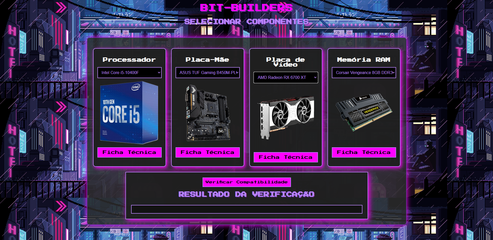
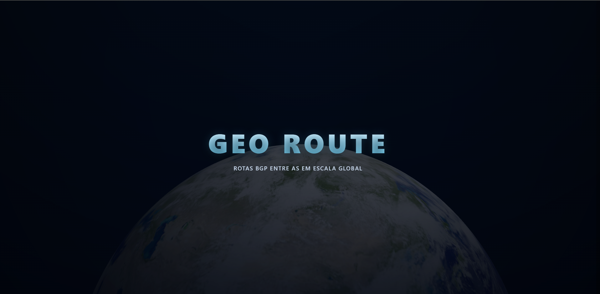

Projetos
Detecção de Ataques ECN em L4S

Detecção de Ataques ECN Não-Responsivos em Arquiteturas L4S por Meio de Aprendizado Supervisionado.
Bit Builders

A aplicação web visa auxiliar usuários no processo de seleção e visualização de componentes para a montagem de computadores pessoais (PC Building)
Geo Router


Plataforma de rastreamento e visualização de roteamento entre Sistemas Autônomos (AS) na Internet